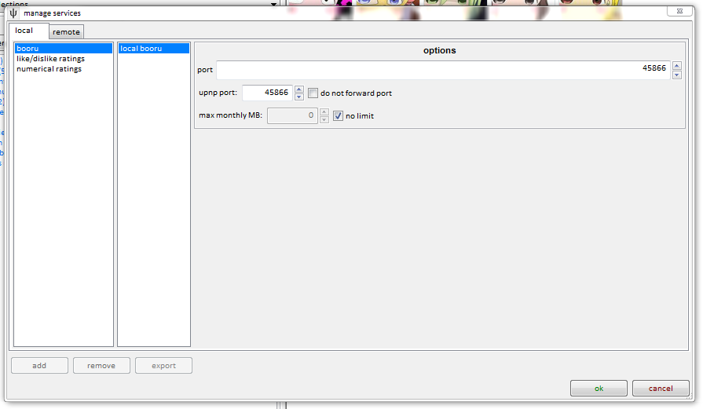

local booru
I have been working on a local booru, hosted from your client, to make it easier to share files with others over the internet. It is very new, but I will be adding more features to it. This help page will grow with it.
First of all, this is hosted from your client, which means other people will be connecting to your computer and fetching files you choose to share from your hard drive. If you close your client, the local booru will no longer work. And if you want people outside your home network (i.e. on the internet) to be able to see it, you will need to forward your client computer's booru port to your internet router.
how to do it
Right click some files you want to share and select share->local booru. This will throw up a small dialog, like so:

This lets you enter an optional name, which titles the share and helps you keep track of it, an optional text, which lets you say some words or html to the people you are sharing with, and an expiry, which lets you determine if and when the share will no longer work.
You can also copy either the internal or external link to your clipboard. The internal link (usually starting something like http://127.0.0.1:45866/) works inside your network and is great just for testing, while the external link (starting http://[your external ip address]:[external port]/) will work for anyone around the world, as long as your port is being forwarded correctly.
If you use a dynamic-ip service like No-IP, you can replace your external IP with your redirect hostname. You have to do it by hand right now, but I'll add a way to do it automatically in future.
Note that anyone with the external link will be able to see your share, so make sure you only share links with people you trust.
forwarding your port
Hold the phone! I forgot to write the clientside UPnP Daemon to register the local booru's UPnP port! I'll add it next week, so for now, you probably want to add a custom entry via the services->manage local upnp dialog. Use (45866, TCP, 45866, hydrus client local booru, 604800). Send me an email if you can't figure it out.
Your home router acts as a barrier between the computers inside the network and the internet. Those inside can see out, but outsiders can only see what you tell the router to permit. Since you want to let people connect to your computer, you need to tell the router to forward all requests of a certain kind to your computer, and thus your client.
If you have never done this before, it can be a headache, especially doing it manually. Luckily, a technology called UPnP makes it a ton easier, and this is how your Skype or Bittorrent clients do it. I'm insane about privacy, though, so the hydrus network will not open any external ports without your permission. You need to go to services->manage services and uncheck a box:

Unless you know what you are doing and have a good reason to make them different, you might as well keep the internal and external ports the same. Once you have it set up, the client should make sure your router keeps that port open for your client. You should see the new mapping appear in your services->manage local upnp dialog, which lists all your router's current port mappings.
If you want to test that the port forward is set up correctly, just going to http://[external ip]:[external port]/ should give a little html just saying hello. Your ISP might not allow you to talk to yourself, though, so ask a friend to try if you are having trouble.
If you still do not understand what is going on here, this is a good article explaining everything.
If you do not like UPnP or your router does not support it, you can set the port forward up manually, but I encourage you to keep the internal and external port the same, because absent a 'upnp port' option, the 'copy external share link' button will use the internal port.
so, what do you get?
Since the booru is still prototype, the actual html layout is currently very simple:

It uses a very similar stylesheet to these help pages, although I've made the thumbnail grid look the way the client does it. At the moment, the thumbnails are the gigantic max size of 200x200, but I will add an option to display the resized versions. Also, flash and audio files will 404 on the thumbnail for the moment.
Clicking a thumbnail leads to a barebones image page that I will flush out in future.
editing an existing share
You can review all your shares on services->review services, under local->booru. You can copy the links again, change the title/text/expiration, and delete any shares you don't want any more.
future plans
Now I have the simplest possible booru working, there is a lot I can add. I would like to make the thumbnails resizeable, and add sorting controls, allow for custom css, add a normal tag display, make those tags searchable, and generally AJAX-ify the entire thing to offload CPU time to the client's web browser.
Also, the bandwidth tracking feature does not work yet, so I'll get that going.